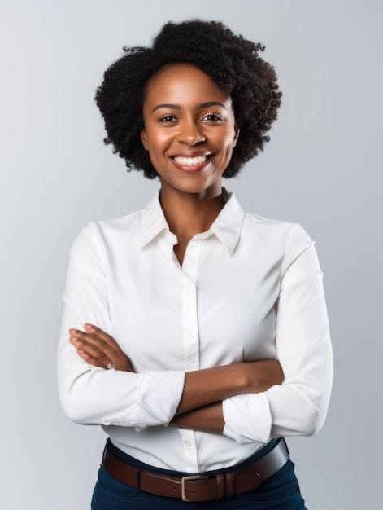
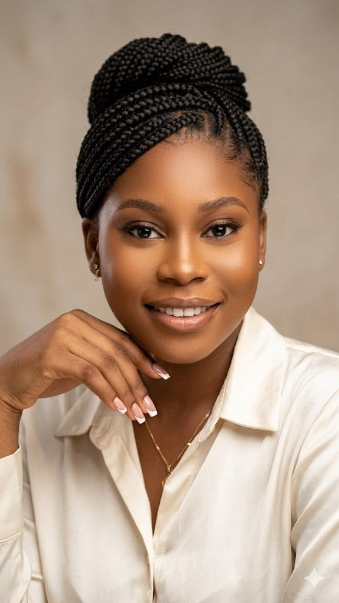

Aïssatou Diop
CEO & Fondatrice
Wave Sénégal
Sénégal
Accueil > Intervenants
Découvrez les experts qui animeront les conférences.
CEO & Fondatrice
Wave Sénégal
Sénégal

Co-fondateur
Flutterwave
Nigeria

Directrice IA & Data
Inwi Digital
Maroc

Experte Politiques Digitales
Carnegie Endowment
Kenya

Spécialité : UX/UI Design
Pays : Kenya
Pays : Égypte

Spécialité : Marketing Digital
Pays : Côte d'Ivoire
Spécialité : Entrepreneuriat
Pays : Zimbabwe
Spécialité : Innovation
Pays : Sierra Leone